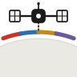

ARTPORTAL
· 全球艺术机会
➕ 发布
中 / EN
机会
招聘
资讯
作品
✦ AI 检索
筛选
▾
截止由近到远
最近更新
✦
✕
更多筛选
✕
类型
全部
展览征集
驻留项目
艺术奖项
工作坊
作品范围
全部作品
关注的人
显示范围
过往项目
即将开启
用户上传
AI 检索
默认全部显示。取消勾选即可只看正在开放的机会。
地区
中国大陆
港澳台
亚洲其他
欧洲
北美
其他
费用
仅看完全免费
资助
提供津贴
提供住宿
报销路费
机构类型
官方体制
独立学术
商业机构
信任
仅看已人工核实
没有符合条件的机会
试试减少筛选条件,或打开"显示已截止"。
清除筛选
数据加载失败
可能是网络问题。请检查连接后重试。
重试
加载更多…
＋